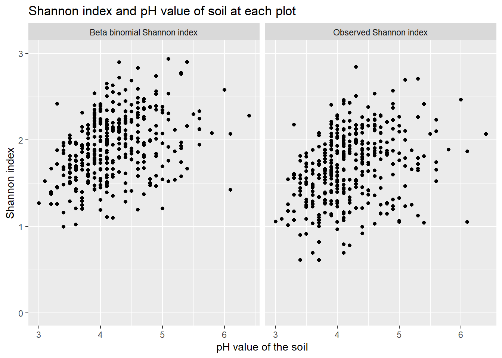

Examples of use cases for the Bayesian model
Last updated: 2021-05-16
Checks: 7 0
Knit directory: DataProject - commit docs/
This reproducible R Markdown analysis was created with workflowr (version 1.6.2). The Checks tab describes the reproducibility checks that were applied when the results were created. The Past versions tab lists the development history.
Great! Since the R Markdown file has been committed to the Git repository, you know the exact version of the code that produced these results.
Great job! The global environment was empty. Objects defined in the global environment can affect the analysis in your R Markdown file in unknown ways. For reproduciblity it’s best to always run the code in an empty environment.
The command set.seed(20210322) was run prior to running the code in the R Markdown file. Setting a seed ensures that any results that rely on randomness, e.g. subsampling or permutations, are reproducible.
Great job! Recording the operating system, R version, and package versions is critical for reproducibility.
Nice! There were no cached chunks for this analysis, so you can be confident that you successfully produced the results during this run.
Great job! Using relative paths to the files within your workflowr project makes it easier to run your code on other machines.
Great! You are using Git for version control. Tracking code development and connecting the code version to the results is critical for reproducibility.
The results in this page were generated with repository version bd74b25. See the Past versions tab to see a history of the changes made to the R Markdown and HTML files.
Note that you need to be careful to ensure that all relevant files for the analysis have been committed to Git prior to generating the results (you can use wflow_publish or wflow_git_commit). workflowr only checks the R Markdown file, but you know if there are other scripts or data files that it depends on. Below is the status of the Git repository when the results were generated:
Ignored files:
Ignored: .Rproj.user/
Untracked files:
Untracked: figure/Animation.Rmd/unnamed-chunk-11-1.gif
Note that any generated files, e.g. HTML, png, CSS, etc., are not included in this status report because it is ok for generated content to have uncommitted changes.
These are the previous versions of the repository in which changes were made to the R Markdown (analysis/example.Rmd) and HTML (docs/example.html) files. If you’ve configured a remote Git repository (see ?wflow_git_remote), click on the hyperlinks in the table below to view the files as they were in that past version.
| File | Version | Author | Date | Message |
|---|---|---|---|---|
| html | 82bea2a | GitHub | 2021-05-16 | Add files via upload |
| Rmd | ff0cd9f | GitHub | 2021-05-16 | Add files via upload |
This page includes two examples of use cases for the beta binomial cover update function presented at the Bayesian model page.
Examples
Nardus grasslands
In the this first example we only work with a subset of the NOVANA data including the tertiary habitat “Nardus grasslands” (in the NOVANA dataset this is encoded as terhabtype = 6230). Furthermore, we only look at year 2014. Further details on how this subset was created, can be found at data 6230.
cover <- read.csv("data/cover_data_6230_year2014.csv")
freq <- read.csv("data/frekvens_data_6230_year2014.csv")
abiotiske <- read.csv("data/abiotiske_data_6230_year2014.csv")We apply the method function to the cover and freq datasets and obtain a dataset with updated abundace values for each species in each plot. In the following we will refer to this as the beta binomial cover data.
beta_binomial_cover <- beta_binomial_cover_update(cover, freq, n = 16, 3)Species level
The following plot is included as an example of a prior distribution used in the beta binomial update method. The plot is the prior distribution for the species “Agrostis capillaris”
curve(dbeta(x,a,b), xlab = "relative cover", main = "Prior distribution of Agrostis capillaris", ylab = sprintf("Beta(%.3f, %.3f)", a, b))
The above plot was built as follows: for each plot where the species “Agrostis capillaris” had a \(1\) in the presence/absence data we saved the number of pins the species had in the cover data and divided these by 16 to get the relative cover. We then fitted a beta distribution to these numbers and thereby obtained the plot.
It is seen that there it high probability of being either around 0 or around 1. This is not only for this species but a common prior distribution for many species. This is because a lot of species are grouped in a way, such that if they are present, they will cover a lot of the area, or else they are not present at all.
Hill Diversity comparison
In this section we will use the Hill diversity that is described in Diversity to compare the beta binomial cover data with the observed cover data. This will highlight how using our method will change the result depending on how much emphasize rare species are given when calculating the diversity for a plot.
Hill diversity is given as
\[ \text{Hill diversity = }\left( \sum_{i=1}^{S} p_i (r_i)^{l}\right)^{1/l} \]
where the \(l\) exponent determines how much weight rare species is given. For high \(l\) values the Hill diversity is more sensitive to rare species. For \(l = -1\) we have the Hill Simpson diversity, for \(l = 0\) we have the Hill Shannon diversity and for \(l = 1\) we have the species richness. In the below we look at some plots in the dataset. We see how the diversity of the plot changes as a function of the exponent \(l\). We do this for the plot in the observed cover dataset (red line) and for the same plot in the beta binomial cover data (blue line). This can help to give a feeling for which aspects of the the plot the beta binomial cover update method has changed.
For plot 1
different_diversities(cover, beta_binomial_cover, plot = 1, remove_column = 3)For plot 100
different_diversities(cover, beta_binomial_cover, plot = 100, remove_column = 3)
It should be noted that in practive we would not calculate the species richness for a plot with the observed cover data but rather with the presence/absence data. If we did calculate the species richness from the observed cover data, we would only get the species richness of the small square in the center of the plot and not of the entire plot. In the above plot we want to show how the observed cover data and the beta binomial cover updated data compare. Therefore, we have calculated the species richness from the observed cover data (species richness is \(l\) = 1). Of this reason, one should probably be careful and not interpret too much on the diversity estimates for large values of \(l\) for the observed cover data as these diversity estimates are not comparable with the ones we get from the beta binomial cover updated data.
When we apply the beta binomial cover update method all species observed in the presence/absence data of the plot will get added a small value in the beta binomial cover updated data even though they have a \(0\) in the observed cover data. When we add this small abundance to species that did not have any observed abundance in the observed cover data we get a higher diversity estimate as expected.
In both the observed cover data and the beta binomial cover data the diversity estimates increase as \(l\) increases. However, the diversity estimate for the beta binomial cover data increases at a much more rapid pace. This can be contributed to the fact that as \(l\) increases the diversity estimate gets more sensitive towards rare species.
All the species that had a \(0\) in the observed cover data will have a small abundance value in the beta binomial cover data implying that these species are rare in this dataset. Thus, the beta binomial data will have a lot more rare species than the observed cover data and it, therefore, makes very good sense that as \(l\) increases, the difference in diversity estimates from the beta binomial cover data and the observed cover data increases.
Instead of only looking at a single plot at a time, we plot the average curve for all plots. The shaded area around the curve visualize the standard deviation at any point along the curve. We do it for all plots in the observed cover data and all the plots in the beta binomial cover data.
Many of the same comments as before also apply to this plot. We note the standard deviation stays roughly the same and only gets bigger for values of \(l\) close to 1. However, as stated earlier we would not use cover data to estimate species richness but presence/absence data so we are not too worried about the increased deviation in this part of the plot.
Different diversity estimates compared
This subsection is intended to further study what the effect of the beta binomial cover update function is on the data. For a number of different diversity measures we will plot the diversity measure obtained from the beta binomial cover data against the diversity measure obtained from the observed cover data. This is meant to further visualize the effect of the proposed method.
All the used diversity estimates are defined at Diversity section. When the Shannon index, Hill Shannon and Hill Simpson are calculated using the beta binomial cover dataset they will be referred to as “beta binomial Shannon index”, “beta binomial Hill Shannon” and “beta binomial Hill Simpson” respectivly.
Below we have calculated the shannon index for each plot in both the observed cover dataset and in the beta binomial cover updated dataset and plotted these against each other
observed_shannon <- shannon(cover, 3)beta_binomial_shannon <- shannon(beta_binomial_cover, 3)
It can be seen in this example that the beta binomial Shannon indexes give a slightly higher value for all plots. Noticeably are the biggest difference among plots with a low Shannon index.
We make a similar plot with the Hill Shannon diversity.
observed_hill_shannon <- hill_shannon(cover, 3)beta_binomial_hill_shannon <- hill_shannon(beta_binomial_cover, 3)Here can it be seen that the difference seems to be largest with the higher value of the hill shannon.
Another method to estimate species diversity is to use the Hill Simpson diversity. We create a similar plot as above.
observed_hill_simpson <- hill_simpson(cover, 3)beta_binomial_simpson <- hill_simpson(beta_binomial_cover, 3)
The difference between the beta binomial Hill Simpson diversity and the Hill Simpson diversity obtained from the observed cover data is less than than for the Hill Simpson as expected. This fits nicely with what we found in the “Hill Diversity comparison” subsection. It is worth to notice that we in this plot get some diversity estimates that are lower in the beta binomial cover data than in the observed cover data.
Species diversity and pH value
One of the reasons you might want to calculate the diversity for a plot/site, is that you want to compare how different variables affect the diversity of the site. An example of this could be that you want to see how the pH value of the soil are related to the diversity of the plot.
Below we plot the beta binomial Shannon index and the observed Shannon index against the pH value of the soil. This is intended to visualize partly if there seems to be any interesting relationship between Shannon index and pH value of the soil and also whether the use of the beta binomial cover update function changes this conclusion.

There does not seem to be any clear relationship between the Shannon index and the pH value. As we also saw in the “Different diversity estimates compared” subsection, the plots with low observed Shannon index get a slightly higher Shannon index when this is calculated from beta binomial cover updated data.
We study the relationship between species diversity and pH value of the soil a bit further. The function plot_index_gradient is used to visualize how different ways of calculating diversities compare against each other when mapped against the pH values of the soil.
plot_diversity(data_for_plot ,c("Species richness", "Beta binomial Hill Shannon", "Beta binomial Hill Simpson"), "pH", description = "The PH value of the soil for each plot")
The general trend that can be seen for all three diversities, beta binomial hill shannon, beta binomial hill simpson and spices richness, is that a low pH value is correlated with lower diversity up until a certain point. further analysis will be need to understand whether or not this is a casual relationship.
Dry calcarous grasslands
In the second example we look at the tertiary habitat “dry calcarous grasslands” (in the NOVANA dataset this is encoded as terhabtype = 6210) from year 2009.
cover_6210 <- read.csv("data/cover_data_6210_year2009.csv")
freq_6210 <- read.csv("data/frekvens_data_6210_year2009.csv")
abiotiske_6210 <- read.csv("data/abiotiske_data_6210_year2009.csv")With this data we are especially interested in how the diversity change when plotted against different values of nitrogen deposition. It is assumed that if the value of nitrogen deposition is high, there is a lot of nitrogen in the soil. It is also known that increased nitrogen supply can cause changes to the species composition.
Therefore, some illustrations of the relationship between nitrogen deposition and diversity measures can be used as another example of where the beta binomial cover update function can be used.
We apply our function to the data.
beta_binomial_cover <- beta_binomial_cover_update(cover_6210, freq_6210, n = 16, remove_column = 3)Again we refer to this new dataset as the beta binomial cover data.
Again we start with the Shannon index as this is so often used to estimate species diversity. We plot the observed Shannon index and the beta binomial Shannon index against the nitrogen deposition.
observed_shannon <- shannon(cover_6210, 3)
As it can be seen here is there not a big difference between the two plots. It should however be noticed that the beta binomial shannon index is slightly higher for all values of nitrogen deposition. It might also be important for an analysis that fewer plots have a shannon index at 0 for the beta binomial model. Both plots show a slight downwards trend indicating that higher nitrogen deposition might lead to lower diversity.
The plots below illustrate how some other diversity measures applied to the beta binomial cover data looks like when mapped against the nitrogen deposition


There does not seem to be a clear relation between the nitrogen deposition and the diversity for any of the diversity measures.
Comparisons across sites
So far have we just been comparing different plots from the same habitat type against each other. since each plot is just a sample of a larger site, could it be useful to compare how different sites compare using both the beta binomial cover data and the observed cover data. We will do this be aggregating the data for all the plots from the same site and year. Since the shannon index is not linear as explained in diversity, can it be misleading to take the average from a group of plots, for this reason will we only focus on the hill shannon diversity in this section.
We will first plot how beta binomial hill shannon compares with the observed hill shannon, where we for each site has taken the average value for all plots.

This looks quite similar to what we found when we compared at plot level.
An other comparison we can make, is to look at how the variance changes from the observed hill shannon, to the beta binomial hill shannon.

From the plot can it be seen that the beta binomial hill shannon has a slightly higher variance an average.
If we instead compare it for each site:

The plot above suggest, that for the sites with a large variance in hill shannon diversity between different plots, will the variance become larger using the beta binomial method. For plot with a low variance, will does we not find the big difference between using the beta binomial method and using the observed cover data.
sessionInfo()R version 4.0.3 (2020-10-10)
Platform: x86_64-w64-mingw32/x64 (64-bit)
Running under: Windows 10 x64 (build 19042)
Matrix products: default
locale:
[1] LC_COLLATE=English_United Kingdom.1252
[2] LC_CTYPE=English_United Kingdom.1252
[3] LC_MONETARY=English_United Kingdom.1252
[4] LC_NUMERIC=C
[5] LC_TIME=English_United Kingdom.1252
attached base packages:
[1] grid stats graphics grDevices utils datasets methods
[8] base
other attached packages:
[1] fitdistrplus_1.1-3 survival_3.2-7 maps_3.3.0
[4] MASS_7.3-53 magick_2.7.1 OpenStreetMap_0.3.4
[7] kableExtra_1.3.4 forcats_0.5.0 stringr_1.4.0
[10] dplyr_1.0.2 purrr_0.3.4 readr_1.4.0
[13] tidyr_1.1.2 tibble_3.0.4 ggplot2_3.3.2
[16] tidyverse_1.3.0 workflowr_1.6.2
loaded via a namespace (and not attached):
[1] httr_1.4.2 splines_4.0.3 jsonlite_1.7.1 viridisLite_0.3.0
[5] modelr_0.1.8 assertthat_0.2.1 sp_1.4-4 blob_1.2.1
[9] cellranger_1.1.0 yaml_2.2.1 pillar_1.4.6 backports_1.1.10
[13] lattice_0.20-41 glue_1.4.2 digest_0.6.25 promises_1.1.1
[17] rvest_0.3.6 colorspace_1.4-1 Matrix_1.2-18 htmltools_0.5.0
[21] httpuv_1.5.5 pkgconfig_2.0.3 broom_0.7.2 raster_3.4-5
[25] haven_2.3.1 scales_1.1.1 webshot_0.5.2 svglite_2.0.0
[29] whisker_0.4 later_1.1.0.1 git2r_0.28.0 mgcv_1.8-33
[33] farver_2.0.3 generics_0.0.2 ellipsis_0.3.1 withr_2.3.0
[37] cli_2.1.0 magrittr_1.5 crayon_1.3.4 readxl_1.3.1
[41] evaluate_0.14 ps_1.4.0 fs_1.5.0 fansi_0.4.1
[45] nlme_3.1-149 xml2_1.3.2 tools_4.0.3 hms_0.5.3
[49] lifecycle_0.2.0 munsell_0.5.0 reprex_0.3.0 compiler_4.0.3
[53] systemfonts_1.0.1 rlang_0.4.8 rstudioapi_0.11 labeling_0.4.2
[57] rmarkdown_2.4 gtable_0.3.0 codetools_0.2-16 DBI_1.1.0
[61] R6_2.4.1 lubridate_1.7.9 knitr_1.30 rgdal_1.5-23
[65] rprojroot_1.3-2 rJava_0.9-13 stringi_1.5.3 Rcpp_1.0.5
[69] vctrs_0.3.4 dbplyr_1.4.4 tidyselect_1.1.0 xfun_0.18